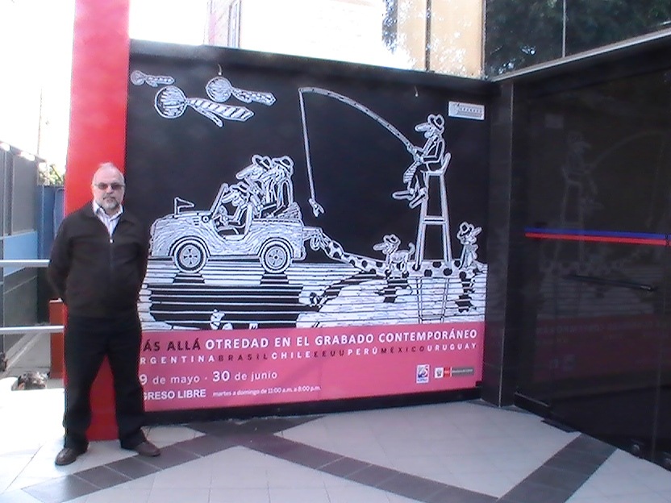
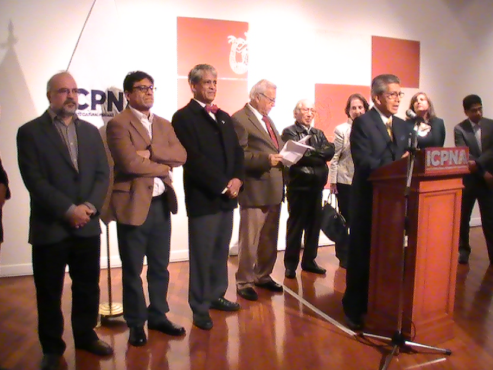
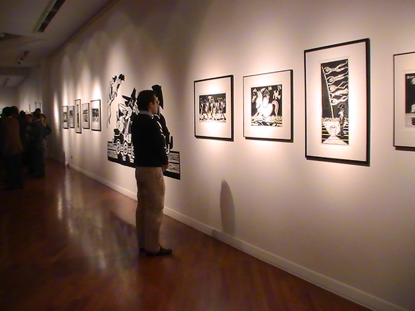

Paulo Cheida é destaque na IV Bienal Internacional do Peru






O artista brasileiro Paulo Cheida Sans é um dos principais destaques na “IV Bienal Internacional de Grabado†realizada pelo ICPNA – Instituto Cultural Peruano Norte Americano - em Lima, Peru. O evento, aberto em 28 de maio, reúne 20 exposições distribuÃdas em 16 galerias e espaços culturais, além de conferências, oficinas de criação e visitas guiadas que acontecem até julho.
A curadoria desta quarta edição é dos especialistas Juan Peralta e Daniel Contreras, que reuniram a participação de representantes de 10 paÃses: Argentina, Brasil, BolÃvia, Colômbia, Chile, Espanha, Estados Unidos, México, Uruguai e Peru. O tema do evento "Transferencia: Imagen de la memoria" fomenta , preserva e difunde a arte da gravura e as novas possibilidades criativas.
Paulo Cheida participa da mostra “Más Allá: Otredad en el grabado contemporâneo†na GalerÃa Germán Krüger Espantoso - ICPNA Miraflores. Esta mostra reúne gravadores de nÃvel internacional e é uma das exposições centrais da Bienal. Além de Cheida, representando o Brasil, participam: Alicia Candiani (Argentina), Enrique Pérez e o TEBAC (México), Colectivo Carrier Pigeon (EE.UU.), Pablo Uribe (Uruguai), Ricardo Villarroel (Chile) e Alfredo Márquez (Perú).
Paulo Cheida apresenta um conjunto de obras intitulado “Nexos Causaisâ€, composto por 10 gravuras em linóleo, 1 painel de grande formato com técnica mista de gravura e uma peça tridimensional de gravura expandida. Cheida explica que em suas obras “há uma denúncia e repúdio contra a busca incessante e perpetuação inescrupulosa do ‘poder’ na sociedade, onde opressores brincam e conduzem as brincadeiras e os oprimidos indefesos aceitam as ‘regras’ de uma convivência injusta e manipuladoraâ€. O artista proferiu conferência com o tema “Presencia del grabado en el arte contemporâneo†e suas gravuras estão estampadas em banners e no painel de entrada da Galeria do ICPNA Miraflores.
Paulo de Tarso Cheida Sans nasceu em Campinas, SP (1955). Cursou Artes Plásticas na PontifÃcia Universidade Católica de Campinas (1978) e é Doutor em Artes pela Unicamp – Universidade Estadual de Campinas (2009). Participou em mais de 400 exposições, tendo recebido 41 prêmios em salões de arte no Brasil e três no exterior (Portugal, Estados Unidos e França). É professor do curso de Artes Visuais e extensionista da PUC-Campinas. Juntamente com a artista Celina Carvalho, fundou o Museu Olho Latino, sediado em Atibaia, SP, especializado na arte da gravura. É curador de exposições nacionais e internacionais e autor de livros na área de Artes.
A Bienal Internacional de Grabado do Peru é um dos principais eventos na área da arte da gravura dada a sua grandiosidade e qualidade das exposições. Confira o site oficial da Bienal: ICPNA
Obras do Acervo Olho Latino que participam desta mostra: